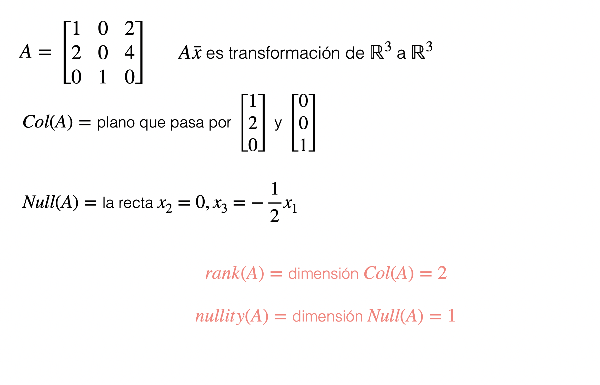
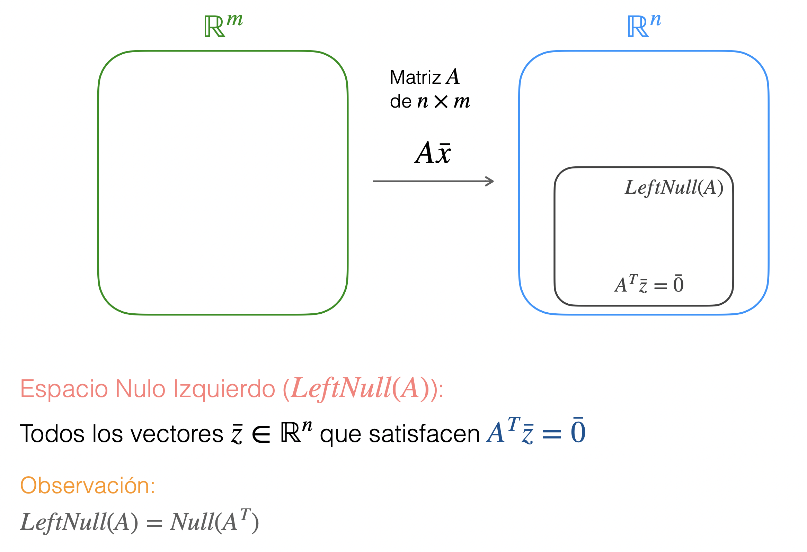

2 Matrices
Conceptos Básicos de Matrices
2.1 Conceptos Generales
- Una matriz es un arreglo bidimensional de números reales
Decimos que la matriz es de n \times m si el número de filas es n y el número de columnas es m
Si n = m decimos que la matriz es cuadrada
Notación:
Si A es una matriz, entonces:
- A_{i,j}denota la entrada en la fila i-ésima y columna j-ésima de A
- A_{i,*}denota la fila i-ésima de A (como vector)
- A_{*,j}denota la columna j-ésima de A (como vector)
Recuerde: Escribimos un vector como fila o columna según nos convenga
2.2 Suma de matrices
2.3 Ponderación de Matrices
2.4 Multiplicación matriz-vector
Es útil visualizar el producto matriz-vector (por la derecha) como una combinación lineal:
Es decir: A\bar{x} es la combinación lineal de las columnas de A según los ponderadores en \bar{x}
Lo mismo para el producto matrix-vector por la izquierda:
Es decir: \bar{x}A es la combinación lineal de las filas de A según los ponderadores en \bar{x}
2.5 Multiplicación matriz-matriz
Es decir:
(AB)_{i,j} es el producto punto entre la fila i-ésima de A y la columna j-ésima de B
También podemos ver el producto matriz-matriz como varios productos matriz-vector:
2.6 Producto Externo
Es decir, \bar{x} \otimes \bar{y} es la matriz de n × m que satisface (\bar{x}\otimes\bar{y}_{i,j} = x_iy_j
Podemos ver el producto matriz-matriz en función de productos externos:

2.7 Matrices como transformaciones lineales
Dos espacios fundamentales
Dos Espacios fundamentales Ejemplos

2.8 Rango y nulidad
Para una matriz A de n × m definimos su rango y su nulidad como:
rank(A) = dimensión de Col(A)
nullity(A) = dimensión de Null(A)
Rango y nulidad

2.9 Transpuesta
2.9.1 Espacio fila
2.9.2 Mas propiedades del Rango
2.10 Espacio nulo izquierdo

2.11 Los 4 espacios fundamentales
2.11.1 Espacios Ortogonales
Complementos Ortogonales
2.11.2 Inversa de una matriz
¿Cuándo existe la inversa de una matriz?